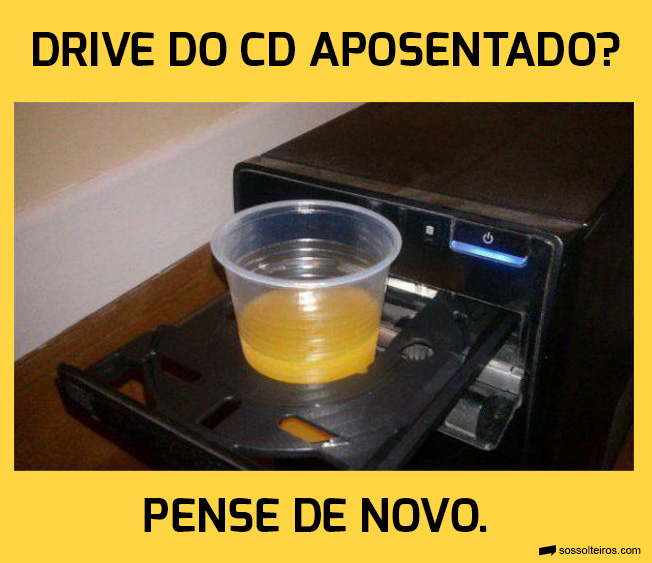

Pudim
O pudim é um site muito importante que demonstra todos os tipos e sabores de pudim existentes, sendo extremamente importante para o desenvolvimento da sociedade. Participei como desenvolvedor e apoiador da página.
Porta-Copos

Projeto inovador que teve como objetivo principal a descoberta de métodos inovadores para reutilizar objetos obsoletos que seriam descartados, promovendo a reciclagem e a redução do lixo.
Filme do Bob Esponja
Participei como dublê no filme do Bob Esponja, executando manobras e atividades de alto risco para tornar as cenas realistas.
Bib'sfiha
Participação como chefe do cozinha convidado na elaboração da receita da Bib'sfiha de carne, sen do também, o responsável pela degustação.
Hambúrguer de Siri
Minha maior obra-prima foi o desenvolvimento da receita do famoso hambúrguer de Siri, conhecido como uma das iguarias mais gostosas do mundo.